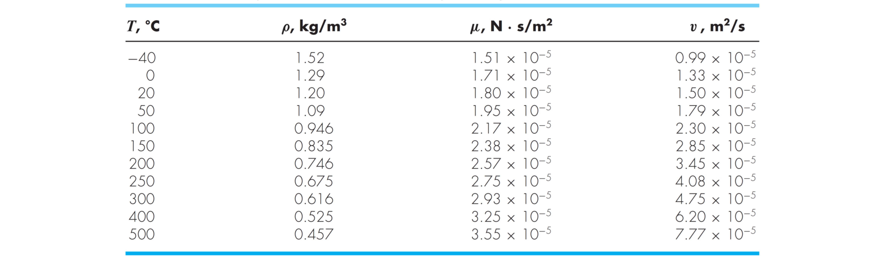
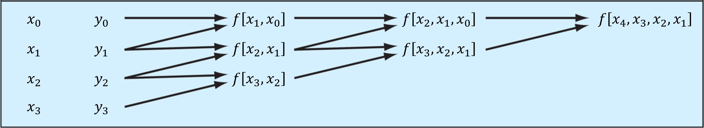

Métodos de Interpolación
Contents
MEC301 - Métodos Numéricos
4. Métodos de Interpolación#
Profesor: Francisco Ramírez Cuevas
Fecha: 29 de Agosto 2022
4.1. Introducción#
La siguiente tabla muestra las propiedades del agua en función de la temperatura.
{kind=link}
En ingeniería generalmente debemos utilizar estas tablas. Si quisieramos determinar, por ejemplo, el valor de la densidad a \(10\mathrm{^oC}\) necesitaríamos conocer la función \(\rho(T)\), ya que el valor no está en la tabla.
¿Cuál es la función más adecuada para representar la densidad?
A diferencia de nuestro problema de ajuste por mínimos cuadrados, en este caso cada valor de la tabla es certero. Es decir, nuestra función debe pasar estrictamente por cada valor indicado en la tabla.
Llamamos a esta función, función de interpolación y en esa clase revisaremos diferentes métodos para generarla.
4.2. Interpolación Polinomial#
Una alternativa, es generar un polinomio de la forma:
considerando \(n+1\) datos, existe solo un polinomio que pasa exáctamente por todos los puntos.
La forma más intuitiva para resolver este problema consiste en formar “\(n+1\)” ecuaciones considerando la intersección con los \(n+1\) datos. Sin embargo este método genera matrices mal condicionadas que son sencibles a errores de redondeo.
Por ejemplo, si queremos determinar el polinomio \(f(x) = a_0 + a_1x + a_2x^2\) que pasa por los puntos \(\{x_i,y_i\} = \{300,0.616\}\), \(\{400,0.616\}\) y \(\{500,0.457\}\), llegamos a un sistema de ecuaciones de la forma:
Tenemos que la matriz \(A\) está mal condicionada
import numpy as np
A = np.array([[1, 300, 300**2],
[1, 400, 400**2],
[1, 500, 500**2]])
print('cond(A)', np.linalg.cond(A))
cond(A) 5893156.794924004
En este capítulo explicaremos métodos alternativos para generar este polinomio de forma más estable.
4.2.1. Intepolación mediante polyfit (ajuste por mínimos cuadrados)#
En la clase anterior usamos la función polyfit para generar un polinomio por ajuste por mínimos cuadrados. Estrictamente hablando, regresión lineal no está clasificado como método de interpolación, ya que el polinomio no necesariamente pasa por todos los datos \(x_i, y_i\) de la muestra. Sin embargo, para un polinomio de grado \(n\) y una muestra con \(n\) datos, polyfit entregará un polinomio de interpolación.
Por ejemplo, consideremos el polinomio de ajuste para la muestra:
\(i\) |
0 |
1 |
2 |
3 |
4 |
|---|---|---|---|---|---|
\(x_i\) |
-5 |
-2 |
0 |
3 |
5 |
\(y_i\) |
-2 |
-1 |
2 |
2.5 |
-1 |
Generaremos un polinomio de grado 2 mediante polyfit, considerando dos casos:
Todos los datos x = [-5, -2, 0, 3, 5], y = [-2, -1, 2, 2.5,-1].
Solo los datos x = [-5, 0, 5], y = [-2, 2,-1], es decir \(\{x_i,y_i\}\) para \(i = 0,2,4\).
%%capture showplot
import matplotlib.pyplot as plt
import numpy as np
# Datos de la muestra xi, yi
xi = np.array([-5, -2, 0, 3, 5])
yi = np.array([-2, -1, 2, 2.5,-1])
x = np.arange(-5, 5, .1) # arreglo en x para graficar
# polinomio grado 2 por ajuste con todos (xi,yi)
ai = np.polyfit(xi,yi,2)
y_fit = np.polyval(ai,x)
# polinomio grado 2 por ajuste con (xi,yi) para i = 0, 2, 4
ai = np.polyfit(xi[[0, 2, 4]],yi[[0, 2, 4]],2)
y_pol = np.polyval(ai,x)
plt.figure(figsize = (9, 6)) # Tamaño de figura
plt.rcParams.update({'font.size': 18}) # Tamaño de fuente
# ploteamos los dos polinomios
plt.plot(x, y_fit, '--k',label='todos los $x_i, y_i$')
plt.plot(x, y_pol, 'b',label='solo $(x_i, y_i)$ para $i = 0,2,4$')
# ploteamos xi, yi
plt.plot(xi, yi, 'ro',label='datos $(x_i, y_i)$')
plt.title('Polinomio grado 2 por mínimos cuadrados')
plt.xlabel('x')
plt.ylabel('y')
plt.grid()
plt.legend(frameon=False)
plt.show()
showplot()

Notar como la curva azul pasa exáctamente por los puntos \(\{x_i, y_i\} = \{-5, -2\}\), \(\{0, 2\}\) y \(\{5, 1\}\)
4.2.2. Polinomios de interpolación de Newton#
Un polinomio de interpolación de Newton de grado \(n\) está definido por:
o bien, en su forma compacta:
Para encontrar los coeficientes imponemos la condición: \(N(x_i) = y_i\) para \(i= 0,1,...,n\), donde \(x_i, y_i\) son las coordenadas de los datos de la muestra en el plano \(x, y\).
Los coeficientes \(a_i\) se obtienen a partir de una fórmula definida en función de los datos \(x_i\) y \(N(x_i) = y_i\). Por ejemplo, a partir de \(N(x_0) = y_0\) determinamos:
luego, para \(N(x_1) = y_1\), tenemos \(N(x_1) = a_0 + a_1(x_1-x_0) = y_1\), donde deducimos:
para \((x_2, y_2)\):
para \((x_3, y_3)\):
En forma generalizada, decimos que \(a_k = f[x_k, x_{k-1}, \dots, x_{1}, x_0]\), donde:
esta operación se define como diferencias divididas.
por ejemplo:
Para determinar las diferencias divididas utilizamos un método recursivo que podemos resumir mediante la siguiente tabla:
{kind=link}
El algoritmo almacena estos valores en una matriz triangular superior, donde la primera fila corresponde al valor de los coeficientes
No existe una función formal en python para determinar los polinomios de Newton. Sin embargo su implementación en código es sencilla.
import numpy as np
def divided_diff(x, y):
'''
función para generar los coeficientes del
polinomio de Newton de orden "n"
'''
n = len(y)
coef = np.zeros([n, n])
coef[:,0] = y # primera columna yi
for j in range(1,n):
for i in range(n-j):
coef[i][j] = (coef[i+1][j-1] - coef[i][j-1]) / \
(x[i+j]-x[i])
return coef[0, :] # retornamos la primera fila
def newton_poly(coef, x_data, x):
'''
evalúa el polinomio de newton en x con los coeficientes
de divided_diff
'''
n = len(x_data) - 1
p = coef[n]
for k in range(1,n+1):
p = coef[n-k] + (x -x_data[n-k])*p
return p
Probamos nuestra función para \(x_i\) = [-5, -1, 0, 2], \(y_i\) = [-2, 6, 1, 3].
%%capture showplot
import matplotlib.pyplot as plt
# Datos de la muestra xi, yi
xi = np.array([-5, -1, 0, 2])
yi = np.array([-2, 6, 1, 3])
# Determinamos coeficientes por diferencias divididas
ai = divided_diff(xi, yi)
# Generamos un arreglo en x para plotear
x = np.arange(-5, 2.1, .1)
# Generar el polinomio de Newton usando "ai"
y = newton_poly(ai, xi, x)
plt.figure(figsize = (9, 6)) # Tamaño de figura
plt.rcParams.update({'font.size': 18}) # Tamaño de fuente
# ploteamos el polinomio de Lagrange
plt.plot(x, y, 'k',label='$N(x)$')
# ploteamos los xi, yi
plt.plot(xi, yi, 'ro',label='datos $x_i, y_i$')
plt.title('Interpolación de Newton')
plt.xlabel('x')
plt.ylabel('y')
plt.grid()
plt.legend(frameon=False)
plt.show()
showplot()

4.2.3. Polinomios de interpolación de Lagrange#
La interpolación por polinomios de Lagrange consiste en aproximar una serie de datos mediante un polinomio \(L(x_i)\), tal que:
donde \(P_i(x)\), son los polinomios de Lagrange, definidos por:
Estos polinomios tienen la propiedad que \(P_i(x_j) = 1\) cuando \(i = j\) y \(P_i(x_j) = 0\) cuando \(i \ne j\). Así, al igual que la interpolación por polinomios de Newton, la interpolación de Lagrange asegura que \(L(x_i) = y_i\) para cada dato de la muestra.
Por ejemplo, para el set de datos \(x_i\) = [0, 1, 2], \(y_i\) = [1, 3, 2], podemos definir tres polinomios de Lagrange:
Graficamos los polinomios de Lagrange \(P_0(x)\), \(P_1(x)\) y \(P_2(x)\):
%%capture showfig
import numpy as np
import matplotlib.pyplot as plt
# Polinomios de Lagrange
P0 = lambda x: 1/2*(x**2 - 3*x + 2)
P1 = lambda x: -x**2 + 2*x
P2 = lambda x: 1/2*(x**2 - x)
# variable para plotear
x = np.linspace(-0.5,2.5,100)
fig = plt.figure(figsize = (9,7)) # tamaño de figura
plt.rcParams.update({'font.size': 18}) # tamaño de fuente
# ploteamos las curvas de cada polinomio
plt.plot(x, P0(x), 'b', label = '$P_0(x)$')
plt.plot(x, P1(x), 'r', label = '$P_1(x)$')
plt.plot(x, P2(x), 'g', label = '$P_2(x)$')
plt.title('Polinomios de Lagrange')
plt.xlabel('x')
plt.ylabel('y')
plt.grid()
plt.legend(frameon=False)
plt.show()
showfig()

En python los polinomios de Lagrange están implementados en la función lagrange de la libreríascipy.interpolate (ver documentación acá)
%%capture showplot
from scipy.interpolate import lagrange
xi = [0, 1, 2]
yi = [1, 3, 2]
# Genera una función en base a interpolación de Lagrange
L = lagrange(xi, yi)
# variable para plotear
x = np.linspace(-0.5,2.5,100)
plt.figure(figsize = (9, 6)) # Tamaño de figura
plt.rcParams.update({'font.size': 18}) # Tamaño de fuente
# ploteamos el polinomio de Lagrange
plt.plot(x, L(x), 'k',label='$L(x)$')
# ploteamos los xi, yi
plt.plot(xi, yi, 'ro',label='datos $x_i, y_i$')
plt.title('Interpolación de Lagrange')
plt.xlabel('x')
plt.ylabel('y')
plt.grid()
plt.legend(frameon=False)
plt.show()
showplot()

4.2.4. Problemas de oscilación#
Un problema de los polinomios de interpolación es que sufren problemas de oscilación a medida que aumenta el número de datos en la muestra.
Este problema se conoce como el fenómeno de Runge, en referencia a Carl Runge, quién en 1901 demostró el mal condicionamiento de los polinomios de interpolación cuando se analizaba la siguiente función:
Esta función se conoce como función de Runge
Analicemos este problema considerando el dominio \(x\in\left[-1,1\right]\). Utilizando polinomios de Lagrange, generaremos un polinomio de interpolación, \(L_5(x)\), con 5 datos igualmente espaciados; y un polinomio, \(L_7(x)\), 7 datos igualmente espaciados.
import numpy as np
from scipy.interpolate import lagrange
# generamos la funcion Runge
f = lambda x: 1/(1+25*x**2)
# Polinomio con 5 datos igualmente espaciados
xi5 = np.linspace(-1,1,5) # xi
yi5 = f(xi5) # yi
L5 = lagrange(xi5,yi5) # polinomio de Lagrange
# Polinomio con 7 datos igualmente espaciados
xi7 = np.linspace(-1,1,7) # xi
yi7 = f(xi7) # yi
L7 = lagrange(xi7,yi7) # polinomio de Lagrange
Graficamos el resultado
%%capture showplot
import matplotlib.pyplot as plt
plt.figure(figsize = (9, 6)) # Tamaño de figura
plt.rcParams.update({'font.size': 18}) # Tamaño de fuente
# arreglo para plotear
x = np.linspace(-1,1,100)
# ploteamos la función de Runge
plt.plot(x,f(x),'--k', label='Runge')
# ploteamos los polinomios de Lagrange
plt.plot(x, L5(x), 'r',label='$L_5(x)$')
plt.plot(x, L7(x), 'b',label='$L_7(x)$')
# ploteamos los xi, yi
plt.plot(xi5, yi5, 'ro',label='_$x_i, y_i$ para $L_5(x)$')
plt.plot(xi7, yi7, 'bo',label='_$x_i, y_i$ para $L_76(x)$')
plt.title('Interpolación de Lagrange')
plt.xlabel('x')
plt.ylabel('y')
plt.grid()
plt.legend(frameon=False)
plt.show()
showplot()

4.3. Interpolación por tramos#
Una alternativa para evitar los problemas de oscilación de los polinomios de interpolación, es usar polinomios de menor orden e interpolar por tramos.
En este caso, para un set de \(n+1\) datos \(\{x_i, y_i\}\), con \(i = 0,1,...,n\), el método de interpolación por tramos consiste en contruir \(n\) polinomios de interpolación para los \(n\) intervalos interiores.

4.3.1. Interpolación lineal (spline linear)#
El modelo más simple consiste en interpolar el valor \(\{x, y\}\) entre dos puntos \(\{x_i, y_i\}\) y \(\{x_{i+1}, y_{i+1}\}\) mediante una recta.
El **método de interpolación lineal consiste en construir \(n\) rectas \(\hat{y}_i(x)\). Las rectas \(\hat{y}_i(x)\) tienen la forma:
En python interp1d de la librería scipy.interpolate permite generar una función en base interpolación lineal (para documentación ver acá).
Por ejemplo, si buscamos el valor de \(x_0 = 1.5\) mediante interpolación lineal con los datos \(x_i\) = [0, 1, 2], \(y_i\) = [1, 3, 2]
from scipy.interpolate import interp1d
xi = [0, 1, 2]
yi = [1, 3, 2]
y = interp1d(xi, yi) # Genera una función
y0 = y(1.5) # Evaluamos la función en x0 = 1.5
print('y0 = y(x0 = 1.5) =',y0)
y0 = y(x0 = 1.5) = 2.5
Igualmente, podemos usar la función generada por interp1d para interpolar un arreglo de valores de “x” (por ejemplo, para graficar la función).
%%capture showplot
import matplotlib.pyplot as plt
import numpy as np
plt.figure(figsize = (9, 6)) # Tamaño de figura
plt.rcParams.update({'font.size': 18}) # Tamaño de fuente
# variable para graficar
x = np.linspace(0,2.0,100)
plt.plot(x, y(x), '-b', label='$y(x)$') # graficamos la función
plt.plot(xi, yi, 'ob') # graficamos los xi, yi
plt.plot(1.5, y(1.5), 'or', label='$y(x_0 = 1.5)$') # graficamos y(1.5)
plt.title('Interpolación lineal (interp1d de scipy)')
plt.xlabel('x')
plt.ylabel('y')
plt.grid()
plt.legend(frameon=False)
plt.show()
showplot()

Alternativamente, podemos usarnumpy.interp que entrega el valor interpolado \(y(x_0) = y_0\), a partir de los datos \(x_i\), \(y_i\), y el valor a interpolar \(x_0\) (ver documentación acá).
import numpy as np
xi = [0, 1, 2]
yi = [1, 3, 2]
x0 = 1.5
y0 = np.interp(x0, xi, yi) # interpolamos y(x) en x0 = 1.5
print('y0 = y(x0 = 1.5) =',y0)
y0 = y(x0 = 1.5) = 2.5
En este caso, para graficar, usamos numpy.interp para generar un arreglo \(y\) de valores interpolados en base a un arreglo \(x\).
%%capture showplot
import matplotlib.pyplot as plt
import numpy as np
plt.figure(figsize = (9, 6)) # Tamaño de figura
plt.rcParams.update({'font.size': 18}) # Tamaño de fuente
# variable para graficar
x = np.linspace(0,2.0,100)
y = np.interp(x,xi,yi)
y_hat = np.interp(1.5,xi,yi)
plt.plot(x, y, '-b', label='$y(x)$') # graficamos la función
plt.plot(xi, yi, 'ob') # graficamos los xi, yi
plt.plot(1.5, y_hat, 'or', label='$y(x_0 = 1.5)$') # graficamos y(1.5)
plt.title('Interpolación lineal (interp de numpy)')
plt.xlabel('x')
plt.ylabel('y')
plt.grid()
plt.legend(frameon=False)
plt.show()
showplot()

Notar que interp1d de la librería scipy.interpolate requiere 2 argumentos, mientras que numpy.interp requiere 3:
from scipy.interpolate import interp1d
y = interp1d(xi,yi) # Genera una función y(x)
...
from numpy import interp
y = interp(x,xi,yi) # Genera un arreglo en base a "x"
Por defecto, los métodos de interpolación lineal no están diseñados para extrapolar:
La función
interp1ddescipy.interpolatearrojará un error si el valor \(x\) está fuera de los límites de interpolación.Por otro lado,
interpdenumpyentregará un valorNaN.
4.3.2. Interpolación spline cúbico#
El sline cúbico consiste en generar una función de interpolación basado en una serie de polinomios cúbicos \(S_i(x) = a_i x^3 + b_i x^2 + c_i x + d_i\), cada uno definido en el tramo \(x\in\left[x_i, x_{i+1}\right]\)
Para encontrar la función de interpolación debemos determinar los coecientes \(a_i, b_i, c_i, d_i\) de cada \(S_i(x)\).
Considerando una serie de datos \(\{x_i, y_i\}\), con \(i = 0,1,...,n\), el spline cúbico necesita \(n\) polinomios \(S_i(x)\), lo que nos da un total de \(4n\) incognitas. Por lo tanto, necesitamos \(4n\) ecuaciones linealmente independientes.
Primero, cada polinomio \(S_i(x)\) debe intersectar los valores extremos del domino en el que está definido. En otras palabras:
esto nos da un total de \(2n\) ecuaciones linealmente independientes
La segunda condición viene de la unión entre los polinomios. Para asegurar una unión suave entre cada tramo, imponemos las condiciones:
lo que nos da un total de \(2(n - 1)\) ecuaciones linealmente independientes.
Las últimas dos ecuaciones se determinan por las condiciones de borde en los extremos \(y(x_0)\), \(y(x_n)\). Tenemos distintas alternativas:
Not a knot. Imponemos una condición para la tercera derivada en los extremos, de manera que \(S_1'''(x_1) = S_2'''(x_1)\) y \(S_{n-1}'''(x_{n-1}) = S_n'''(x_{n-1})\)
Clamped. La primera derivada en los extremos, \(S_1'(x_0) = S_n'(x_n) = 0\)
Natural. La segunda derivada en los extremos, \(S_1''(x_0) = S_n''(x_n) = 0\)
Periodic. Se usume una función periódica, de manera que \(S_1'(x_0) = S_n'(x_n)\), y \(S_1''(x_0) = S_n''(x_n)\). Solo válida para funciones periodicas, es decir cuando \(y(x_0) = y(x_n)\).
En python, interpolación cúbica está implementada a través de la función CubicSpline de la librería scipy.interpolate (para documentación ver acá).
CubicSpline genera una función de interpolación a partir de la muestra \(x_i, y_i\)
from scipy.interpolate import CubicSpline
y = CubicSpline(xi,yi) # Genera una función y(x)
Podemos controlar las condiciones de borde mediante un tercer argumento bc_type:
from scipy.interpolate import CubicSpline
y = CubicSpline(xi,yi,bc_type='not-a-knot') # Condición de borde not a knot
y = CubicSpline(xi,yi,bc_type='periodic') # Condición de borde periodica
y = CubicSpline(xi,yi,bc_type='clamped') # Condición de borde "clamped"
y = CubicSpline(xi,yi,bc_type='natural') # Condición de borde"natural"
También podemos usar bc_type para especificar el valor de las derivadas en los extremos:
from scipy.interpolate import CubicSpline
# Primera derivada = 0.5 en los extremos"
y = CubicSpline(xi,yi,bc_type=((1, 0.5), (1, 0.5)))
# Segunda derivada = 0.5 en los extremos"
y = CubicSpline(xi,yi,bc_type=((2, 0.5), (2, 0.5)) )
Particularmente, la instrucción:
bc_type=((1, 0.0), (1, 0.0))es equivalente aclamped, ybc_type=((2, 0.0), (2, 0.0))es equivalente anatural.
Por defecto, CubicSplineasume bc_type='not-a-knot'
Analicemos el comportamiento de las condiciones de borde not-a-knot, clampedy spline en la interpolación spline de los datos \(x_i\) = [3, 5, 7, 9], \(y_i\) = [2.5, 1.5, 2.0, 1.8]
from scipy.interpolate import CubicSpline
import numpy as np
xi = np.array([ 3, 5, 7, 9])
yi = np.array([2.5, 1.5, 2.0, 1.8])
# Generamos 3 funciones de interpolación "spline" con distintas condiciones de borde
y_1 = CubicSpline(xi,yi,bc_type='not-a-knot')
y_2 = CubicSpline(xi,yi,bc_type='clamped')
y_3 = CubicSpline(xi,yi,bc_type='natural')
%%capture showplot
import matplotlib.pyplot as plt
import numpy as np
plt.figure(figsize = (9, 7)) # Tamaño de figura
plt.rcParams.update({'font.size': 18}) # Tamaño de fuente
x = np.linspace(2,10,100) # variable para graficarS
plt.plot(xi, yi, 'ko') # graficamos los xi, yi
plt.plot(x, y_1(x), '-b', label='not-a-knot') # graficamos la función
plt.plot(x, y_2(x), '-r', label='clamped') # graficamos la función
plt.plot(x, y_3(x), '-g', label='natural') # graficamos la función
plt.title('Interpolación spline')
plt.xlabel('x')
plt.ylabel('y')
plt.grid()
plt.legend(frameon=False)
plt.show()
showplot()

Por defecto, CubicSpline extrapola los valores fuera de los valores extremos. Podemos suprimir la extrapolación mediante la instrucción extrapolate=False. En este caso, la función entregará NaN para los valores extrapolados.
%%capture showplot
from scipy.interpolate import CubicSpline
import matplotlib.pyplot as plt
import numpy as np
xi = np.array([ 3, 5, 7, 9])
yi = np.array([2.5, 1.5, 2.0, 1.8])
# spline "not a knot" sin extrapolación
y_1 = CubicSpline(xi,yi,extrapolate=False)
plt.figure(figsize = (9, 6)) # Tamaño de figura
plt.rcParams.update({'font.size': 18}) # Tamaño de fuente
x = np.linspace(2,10,100) # arreglo para graficar
plt.plot(xi, yi, 'ok') # graficamos los xi, yi
plt.plot(x, y_1(x), '-b') # graficamos la función
plt.title('Interpolación spline')
plt.xlabel('x')
plt.ylabel('y')
plt.grid()
plt.show()
showplot()

CubicSpline además nos permite determinar las derivadas de la función de interpolación. Para esto, debemos incluir un índice en el segundo argumento de la función generada:
from scipy.interpolate import CubicSpline
y = CubicSpline(xi,yi) # Generamos la función de interpolación
# Derivadas
y(x,1) # Primera derivada
y(x,2) # Segunda derivada
y(x,3) # Tercera derivada
Debido a que CubicSpline está basada en un polinomio de interpolación cúbico, solo admite hasta la tercera derivada.
%%capture showplot
from scipy.interpolate import CubicSpline
import matplotlib.pyplot as plt
import numpy as np
xi = np.linspace(-2*np.pi,2*np.pi,20)
yi = np.sin(xi)
# spline "not a knot"
y_1 = CubicSpline(xi,yi)
plt.figure(figsize = (9, 6)) # Tamaño de figura
plt.rcParams.update({'font.size': 18}) # Tamaño de fuente
x = np.linspace(-2*np.pi,2*np.pi,100) # arreglo para graficar
plt.plot(x, y_1(x), '--k',label=r"$y(x)$") # graficamos la función
plt.plot(x, y_1(x,1), '-b',label=r"$y'(x)$") # primera derivada
plt.plot(x, y_1(x,2), '-r',label=r"$y''(x)$") # segunda derivada
plt.plot(x, y_1(x,3), '-g',label=r"$y'''(x)$") # segunda derivada
plt.title('Derivadas interpolación spline')
plt.xlabel('x')
plt.ylabel('y')
plt.ylim(-2,2)
plt.grid()
plt.legend()
plt.show()
showplot()

4.4. Interpolación multidimensional#
Los métodos de interpolación por tramos revisados anteriormente pueden ser extendidos para problemas multidimensionales. Por ejemplo, en el caso 2D, el problema consiste en determinar un valor \(z= f(x,y)\), interpolado entre los valores extremos \(f(x_1,y_1)\), \(f(x_1,y_2)\), \(f(x_2,y_1)\) y \(f(x_2,y_2)\).
{kind=link}
4.4.1. Interpolación 2D#
Para interpolacion 2D, la librería scipy.interpolate posee la funcion interp2d (para documentación ver acá). Esta función retorna una función \(z = f(x,y)\).
Para los inputs, interp2d requiere, al menos, tres argumentos (x, y, z), donde:
xeycorresponden a los valores \(x_i\) y \(y_j\) en formato arreglo 1D, o cuadrídula 2D generada pormeshgridzcorresponde a los valores \(z_{ij}\) en formato de cuadrídula 2D.
Mediante la intrucción opcional kind podemos especificar el tipo de polinomio de interpolación. Usamos 'linear' para interpolación linear y 'cubic' para interpolación cúbica. Por defecto, kind='linear'
En el siguiente ejemplo, usamos interp2d para interpolar una serie de datos \(x_i\in\left[-5,5\right]\) y \(y_j\in\left[-5,5\right]\), igualmente espaciados con \(\Delta x = \Delta y = 0.25\). El valor de \(z_{ij}\) es generado a partir de la función \(z=\sin\left(x^2+y^2\right)\)
from scipy.interpolate import interp2d
# xi, y yj en formato arreglo 1D
xi = np.arange(-5, 5, 0.25)
yj = np.arange(-5, 5, 0.25)
# Cuadrícula 2D generada por meshgrid
xxi, yyj = np.meshgrid(xi, yj)
# generamos una cuadrícula 2D para zij a partir de la función sin(x^2 + y^2)
zij = np.sin(xxi**2+yyj**2)
# Función de interpolación
f = interp2d(xi, yj, zij, kind='cubic')
print('Función de interpolación')
print('z(x=0.15, y=2.45) = ', f(0.15,2.45))
Función de interpolación
z(x=0.15, y=2.45) = [-0.25105047]
4.4.2. Interpolación en 3 o más dimensiones#
Para interpolación con más de 2 dimensiones, scipy.interpolate cuenta con la función interpn.
La discusión respecto a esta función está fuera de los alcances del curso. Sin embargo, puede encontrar más información en la documentación oficial.
4.5. Referencias#
Kong Q., Siauw T., Bayen A. M. Chapter 16: Interpolation in Python Programming and Numerical Methods – A Guide for Engineers and Scientists, 1st Ed., Academic Press, 2021
Chapra S., Canale R. Capítulo 18: Interpolación en Métodos Numéricos para Ingenieros, 6ta Ed., McGraw Hill, 2011